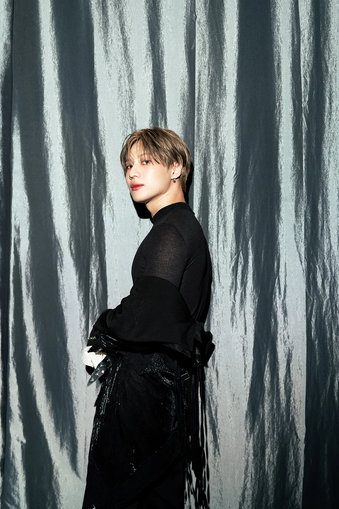

Lee TaeMin
Biografía
Taemin, cuyo nombre real es Lee Tae-min, nació el 18 de julio de 1993 en Seúl, Corea del Sur. Es cantante, bailarín y actor, reconocido por ser el integrante más joven del grupo SHINee, con el que debutó en 2008 bajo la agencia SM Entertainment.
Desde sus inicios, Taemin destacó por sus habilidades en el baile, siendo considerado uno de los mejores bailarines dentro de la industria del K-pop gracias a su estilo interpretativo y precisión en el escenario.
Carrera
A lo largo de su trayectoria con SHINee, Taemin participó en múltiples producciones musicales que consolidaron al grupo como uno de los más influyentes del género. Sin embargo, también ha desarrollado una exitosa carrera como solista.
En 2014, debutó como solista con su primer mini álbum Ace, marcando el inicio de una nueva etapa artística en la que exploró sonidos más maduros y conceptos innovadores. Posteriormente, lanzó diversos trabajos como Press It (2016), Move (2017) y Never Gonna Dance Again (2020), los cuales fueron bien recibidos tanto por la crítica como por el público.
Su carrera se ha caracterizado por una constante evolución musical y conceptual, destacándose por su capacidad para reinventarse y experimentar con distintos estilos, consolidándose como uno de los artistas solistas más representativos de su generación dentro del K-pop.
Discografía
Álbum de estudio
- 2016: Press It
- 2017: Move
- Show! Music Core (쇼! 음악중심; 2010-2011).
- 2018: TAEMIN
- 2020: Never Gonna Dance Again
EPs
- 2014: Ace
- 2016: Solitary Goodbye
- 2017: Flame Of Love
- 2019: WANT
- 2019: FAMOUS
- 2021: Advice
- 2023: GUILTY
- 2024: Eternal